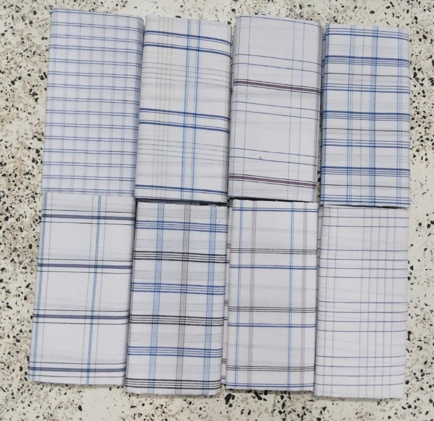
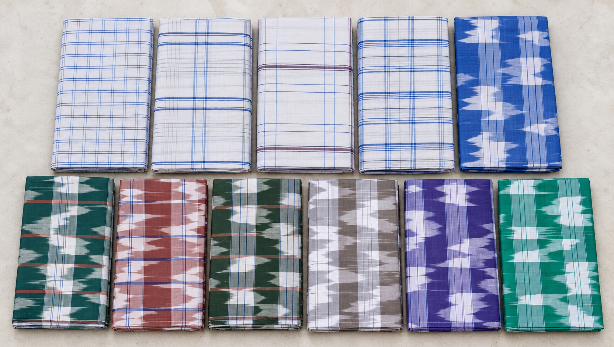
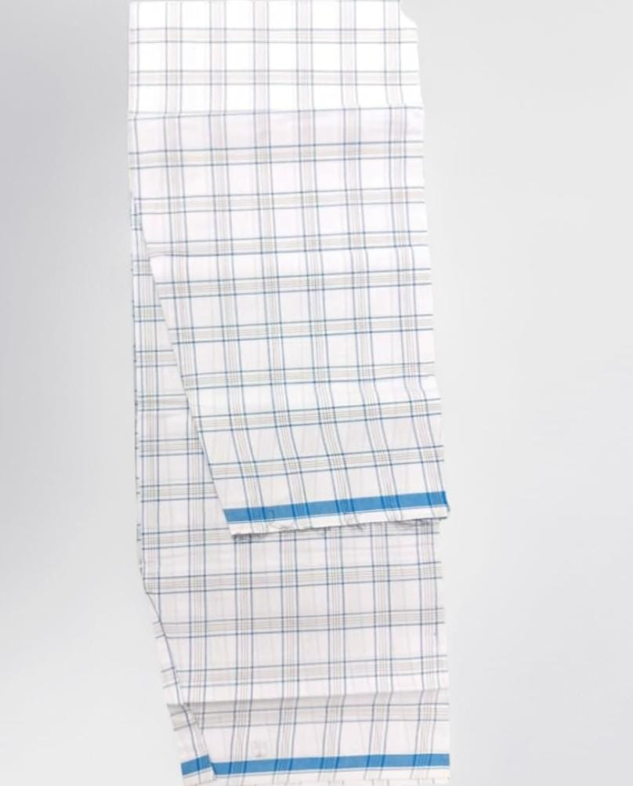
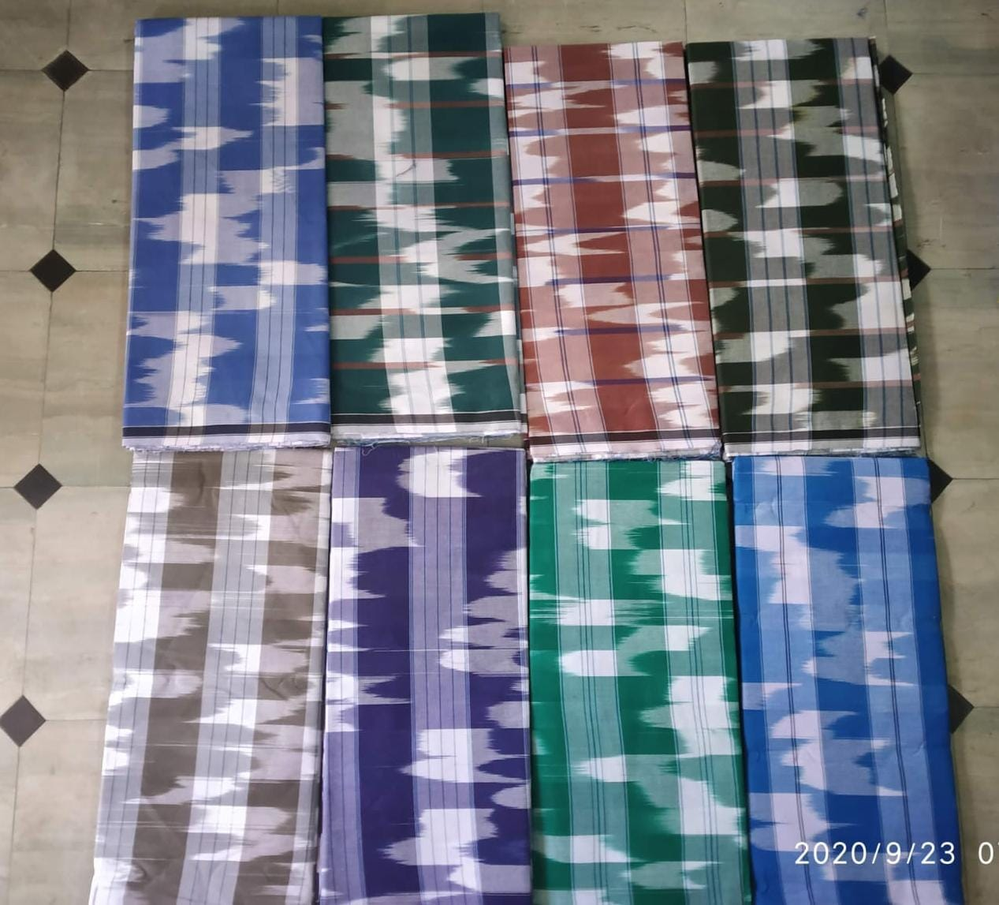
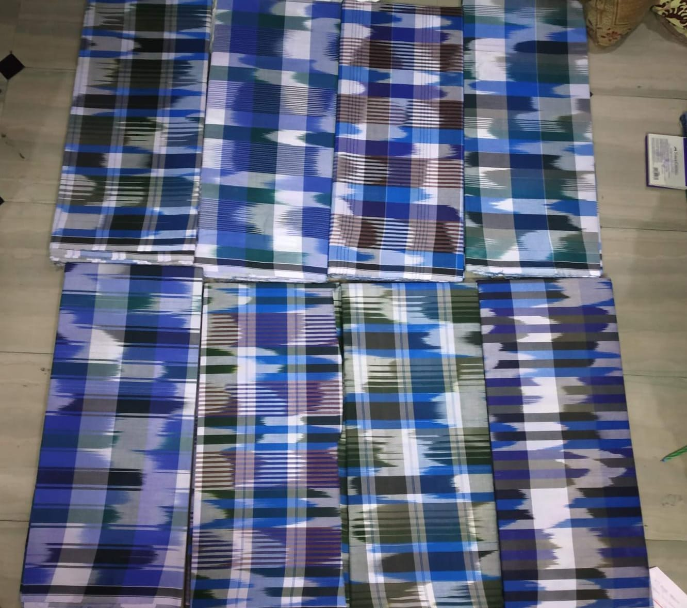
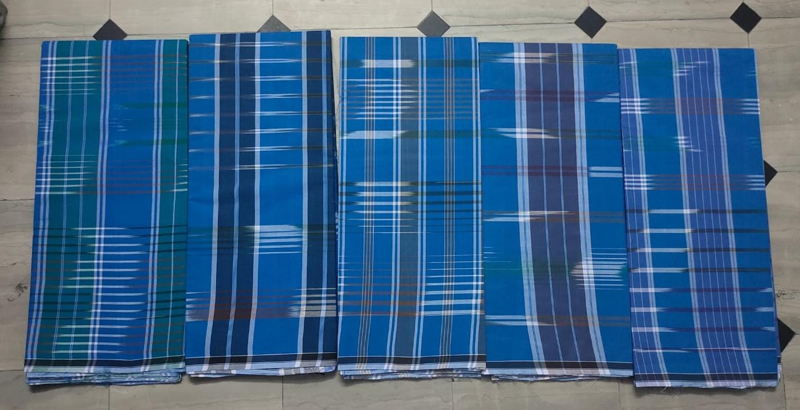
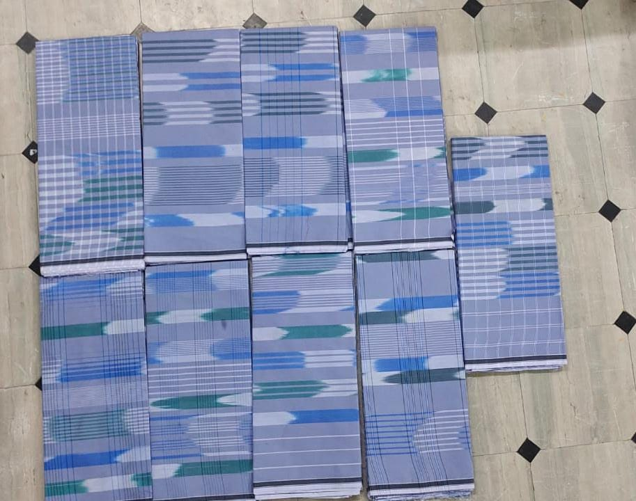

Classic White Checks
Fine blue and grey checked lines across a clean white background.
PODATURPET, TAMIL NADU · WHOLESALE ENQUIRIES
Lungis from a town that lives the craft.
Explore our photographed designs for your shop or wholesale requirement. Start with a pattern. Let’s discuss the details.


Explore Podaturpet’s checked designs. Ask about samples, quantities and delivery.
MURARAJ TECHNOLOGIES
Promote your shop, company or services on Podaturpet.com. Share your business details and artwork with us to discuss a placement.
Advertise your business ↗Discuss with MuraRaj TechnologiesFree development support · scope agreed together
Advertising placement and terms are agreed before publication. Development support is free within the agreed scope; domains, hosting, paid advertising and hardware may cost extra.
THE LUNGI COLLECTION
Original product photographs. Choose a design to start your wholesale enquiry.

Fine blue and grey checked lines across a clean white background.

A light checked white design distinguished by a vivid blue edge.

Bold checked colour combinations for everyday textile discussions.

Traditional pattern references inspired by the region's weaving identity.

Distinctive blue checks for buyers exploring powerloom sourcing.

A quieter checked palette for buyers comparing traditional styles.
Confirm availability, fabric, size, minimum order, samples, price and delivery terms before ordering.
ROOTED IN OUR TOWN

Podaturpet, also called Podhaturpet or Pothaturpettai, is a town in Pallipet taluk. Its Town Panchayat describes a local identity shaped by handloom and powerloom weaving, paddy fields and Amman festivals.
Town Panchayat source ↗PLAN A DAY OUT

Temple heritage and a useful rail connection for the region.
Shivashanky · CC BY-SA 4.0 · Display crop
Plan temple visits with official booking and travel information.
Nikhil B · CC BY-SA 4.0 · Display crop
A regional hill-temple destination; check access before travelling.
Raghavan2010 · CC0 · Display cropAlso explore Nagari, Arakkonam, Tiruvallur and Kanchipuram in the regional guide. Confirm opening times, access and bookings directly with the relevant authority.
OFFICIAL DISTRICT UPDATES · SOURCES CHECKED 31 OCT 2026
TIRUVALLUR DISTRICT
Published · Event
A job fair is announced for 30 October at the District Employment and Career Guidance Centre, Tiruvallur. Read the notice for attendance details and confirm arrangements before travelling.
Read official notice ↗Past event · 30 October 2026
TIRUVALLUR DISTRICT
Published · Event
The October agriculture grievance meeting is announced for 30 October at the District Collectorate. Confirm the time and participation instructions in the source.
Read official notice ↗Past event · 30 October 2026
TIRUVALLUR DISTRICT
Published
The district asks farmers to register for a Farmer ID for fertilizer, crop insurance and crop loan services. Read the official notice for the registration process.
Read official notice ↗Dated notice · confirm arrangements with the official source
Selected notices, not a live feed. Event dates are shown for reference; open the source for current arrangements.
UPCOMING PROJECTS · WORK IN PROGRESS
Personal research. Shared learning.
LOW-COST ROBOTICS RESEARCH
Exploring a low-cost, friendly robot through hands-on learning and community collaboration.
Community learning project · Not for income
Discuss this projectPHONE CAMERA RESEARCH
Exploring how a phone camera can help detect vehicles approaching a cyclist from behind. Detection accuracy is still being tested.
Community learning project · Not for income
Discuss this projectInterested in coding, electronics, testing or sharing ideas? Let’s learn together.
ONE TEAM. ONE PLACE TO CONNECT.
Lungi enquiries or business support. English or Tamil. Start with a message.